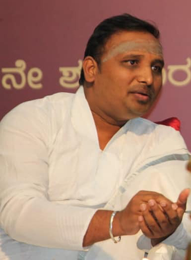
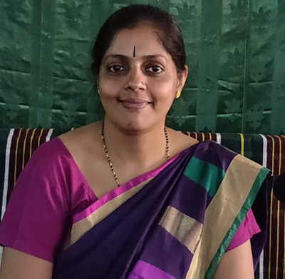

Our Esteemed Members
Distinguished trustees and scholars who guide the vision and mission of Bharatiya Vidvat Parishat

Prof. Veeranarayana N Pandurangi
Chairperson & Founder

Prof. Shivani V
Secretary & Founder

Asst. Prof. Bhaskar Bhat Joshi
Treasurer
Prof. Nagaraj Paturi
Member

Dr. Shruthi H.K
Member